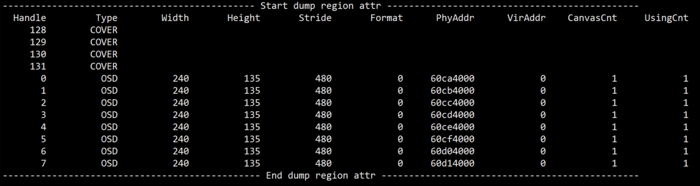

MI RGN API
1. 概 述¶
1.1. 模块说明¶
区域管理模块参与SCL模块的内部流处理的一个环节。底层硬件模块支持是GOP（Graphic output path）， 区域管理模块是利用 GOP 的特性抽象出来的一套软件接口，利用分时复用的原理使OSD(On-screen display)或者Cover贴到各个通道上。
区域管理模块提供区域资源的控制管理功能，包括区域的创建、销毁、获取与设置区域属性、获取与设置区域的通道属性等。
区域属性分为两种，一种是cover，cover只是按照设定，给一块区域做遮挡，底层驱动只要知道显示的位置大小和颜色即可，因此创建cover时，不会给cover分配内存做显示。
另外一种区域属性称为osd,有些地方亦称为overlay，它同样可以贴在video显示的区域，这块区域用内存来描述显示的内容，所以这块内容可以做点对点画图操作，显示内存支持argb、位图两种格式，使用者可以根据实际的场景来选择所需要的格式。
目前OSD可以支持的格式有ARGB1555、ARGB4444、ARGB8888、RGB565、I2、I4、I8，每个芯片支持的情况会有差异，下文会详细说明。暂不支持YUV格式。I2、I4、I8格式为位图格式，一个pixel的内存数据当作一个索引，通过索引能找到调色盘中的颜色数据，当前pixel显示的就是此颜色。
无论是cover还是OSD其显示的内容均是叠加到SCL模块的输出上，通过实验，当设定了region显示之后，把SCL模块的输出dump成文件,通过工具就可以看到region的内容。
OSD可以显示一张图片，COVER仅仅可以设定颜色，在同一通道上OSD的内容永远在COVER之上，下图在同一个通道上显示了四个cover区域以及三张OSD。

1.2. 流程框图¶

1.3. 关键字说明¶
I2
4色位图格式，用2个bit表示一个索引，因而有4种颜色，在调色盘中通过索引找到对应的颜色。
I4
16色位图格式，与I2格式类似，不同的是用4个bit表示一个索引，因而有16种颜色。
I8
256色位图格式，与I2格式类似，不同的是用8个bit表示一个索引，因而有256种颜色。
Palette
位图的调色盘，由Alpha、Red、Green、Blue四个8bit变量表示一个pixel的颜色，一共有256个颜色，对应0-255的索引序号。
OSD
On-screen display的简称，用来显示一些文字、图片、以及人机交互的菜单等内容。
GOP
Graphic output path的简称，可以理解为在video层之上的一个图形层。
1.4. RGN模块内存使用说明¶
为确保OSD能稳定输出在video上，RGN根据硬件/用户的使用情况为每个OSD分配一到多张buffer， 中心思想为防止对正在用于硬件显示的buffer做写操作，从而造成OSD闪烁或撕裂的现象。
可能会增加RGN内存占用的情况主要有以下3种：
- 上层刷新OSD（调用
MI_RGN_SetBitMap/MI_RGN_GetCanvasInfo/MI_RGN_UpdateCanvas）的速度变快； - 一个OSD被同时叠加到的通道数增多；
- 一个通道同时叠加的OSD数超过硬件最大layer（每个芯片支持的硬件最大layer数见 表2-1：Tiramisu芯片信息和表2-2：Muffin芯片信息）。
下表列出了几种常见的场景下buffer使用情况：
| 场景描述 | OSD个数 | OSD刷新速度 t/次 | 通道个数 | buffer使用 |
|---|---|---|---|---|
| 1个OSD贴到1个通道，只贴一次不刷新 | 1 | NA | 1 | 1 |
| 1个OSD贴到1个通道，慢速刷新 | 1 | 1s | 1 | 2 |
| 1个OSD贴到1个通道，快速刷新 | 1 | 30ms | 1 | 3 |
| 1个OSD贴到n个通道，只贴一次不刷新 | 1 | NA | n | 1 |
| 1个OSD贴到n个通道，慢速刷新 | 1 | 1s | n | 2 |
| 1个OSD贴到n个通道，快速刷新 | 1 | 30ms | n | [3, 2n+1] |
| m个OSD贴到1个通道，只贴一次不刷新 | m <= L | NA | 1 | m |
| m个OSD贴到1个通道，慢速刷新 | m <= L | 1s | 1 | 2m |
| m个OSD贴到1个通道，快速刷新 | m <= L | 30ms | 1 | 3m |
| m个OSD贴到n个通道，只贴一次不刷新 | m <= L | NA | n | m |
| m个OSD贴到n个通道，慢速刷新 | m <= L | 1s | n | 2m |
| m个OSD贴到n个通道，快速刷新 | m <= L | 30ms | n | [3m, m(2n+1)] |
| m个OSD贴到n个通道，只贴一次不刷新 | m > L | NA | n | L + n(m - L) |
| m个OSD贴到n个通道，慢速刷新 | m > L | 1s | n | 2L + 2n(m - L) |
| m个OSD贴到n个通道，快速刷新 | m > L | 30ms | n | [3L, L(2n+1)] + 3n(m–L) |
注：
- L 表示硬件最大 layer 数；
- 形如[3, 2n+1]表示闭区间，buffer个数为此区间内的某个值（受系统调度影响，通常不会到达最大值）。
2. API 参考¶
| API名 | 功能 |
|---|---|
| MI_RGN_Init | 初始化 |
| MI_RGN_DeInit | 反初始化 |
| MI_RGN_Create | 创建区域 |
| MI_RGN_Destroy | 销毁区域 |
| MI_RGN_GetAttr | 获取区域属性 |
| MI_RGN_SetBitMap | 设置区域位图 |
| MI_RGN_AttachToChn | 将区域叠加到通道上 |
| MI_RGN_DetachFromChn | 将区域从通道中撤出 |
| MI_RGN_SetDisplayAttr | 设置区域的通道显示属性 |
| MI_RGN_GetDisplayAttr | 获取区域的通道显示属性 |
| MI_RGN_GetCanvasInfo | 获取区域画布信息 |
| MI_RGN_UpdateCanvas | 更新区域画布信息 |
| MI_RGN_InitDev | 初始化rgn设备 |
| MI_RGN_DeInitDev | 反初始化rgn设备 |
2.1. MI_RGN_Init¶
功能
初始化。
语法
MI_S32 MI_RGN_Init(MI_U16 u16SocId, MI_RGN_PaletteTable_t *pstPaletteTable);
形参
| 参数名称 | 参数含义 | 输入/输出 |
|---|---|---|
| s32SocId | 芯片ID，用于级联场景。 | 输入 |
| pstPaletteTable | 调色板指针。 | 输入 |
返回值
- MI_RGN_OK 成功。
- MI_ERR_RGN_BUSY 已初始化。
依赖
- 头文件：mi_sys.h、mi_rgn.h。
- 库文件
注意
- I2 / I4 / I8 的图像格式是共用一份palette table，palette table只能在初始化时做一次，不可再次设置。
- RGB 格式不会参考 palette。
- Palette 的第 0 号成员为透明色，上层无法指定。
- MI_RGN_Init 需要在其他使用到 RGN 的模块 Init 之前进行（如SCL）。
举例
MI_S32 s32Result = 0; MI_RGN_PaletteTable_t stPaletteTable； memset(&stPaletteTable, 0, sizeof(MI_RGN_PaletteTable_t)); stPaletteTable.astElement[1].u8Alpha = 255; stPaletteTable.astElement[1].u8Red = 255; stPaletteTable.astElement[1].u8Green = 0; stPaletteTable.astElement[1].u8Blue = 0; stPaletteTable.astElement[2].u8Alpha = 255; stPaletteTable.astElement[2].u8Red = 0; stPaletteTable.astElement[2].u8Green = 255; stPaletteTable.astElement[2].u8Blue = 0; stPaletteTable.astElement[3].u8Alpha = 255; stPaletteTable.astElement[3].u8Red = 0; stPaletteTable.astElement[3].u8Green = 0; stPaletteTable.astElement[3].u8Blue = 255; s32Result = MI_RGN_Init(0, &stPaletteTable); s32Result = MI_RGN_DeInit(0);
相关主题
2.2. MI_RGN_DeInit¶
功能
反初始化。
语法
MI_S32 MI_RGN_DeInit(MI_U16 u16SocId);
返回值
- MI_RGN_OK 成功。
- MI_ERR_RGN_BUSY 未初始化。
依赖
- 头文件：mi_sys.h、mi_rgn.h。
- 库文件：libmi_rgn.so
注意
MI_RGN_DeInit需要在其他使用到RGN的模块Deinit之后进行（如SCL）。
举例
参见MI_RGN_Init 举例。
相关主题
2.3. MI_RGN_Create¶
功能
创建区域。
语法
MI_S32 MI_RGN_Create(MI_U16 u16SocId, MI_RGN_HANDLE hHandle, MI_RGN_Attr_t *pstRegion);
形参
| 参数名称 | 参数含义 | 输入/输出 |
|---|---|---|
| s32SocId | 芯片ID，用于级联场景。 | 输入 |
| hHandle | 区域句柄号。 必须是未使用的hHandle号 取值范围：[0, MI_RGN_MAX_HANDLE]。 |
输入 |
| pstRegion | 区域属性指针。 | 输入 |
返回值
- MI_RGN_OK成功。
- 非MI_RGN_OK 失败，参照返回值。
依赖
- 头文件：mi_sys.h、mi_rgn.h。
- 库文件
注意
- 该句柄由用户指定，意义等同于 ID 号。
- 不支持重复创建。
- 区域属性必须合法，具体约束参见MI_RGN_Attr_t。
- MI_RGN_Attr_t中指定Cover还是OSD
- 区域属性指针不能为空。
- 创建 Cover时，只需指定区域类型即可。其它的属性，如区域位置，层次等信息在调用 MI_RGN_AttachToChn 接口时指定。
- 创建区域时，本接口只进行基本的参数的检查，例如：最小宽高，最大宽高等；当区域 attach 到通道上时， 根据各通道模块支持类型的约束条件进行更加有针对性的参数检查，譬如支持的像素格式等；
举例
MI_S32 s32Result = 0; MI_RGN_HANDLE hHandle = 0; MI_RGN_Attr_t stRegion; stRegion.eType = E_MI_RGN_TYPE_OSD; stRegion.stOsdInitParam.ePixelFmt = E_MI_RGN_PIXEL_FORMAT_RGB1555; stRegion.stOsdInitParam.stSize.u32Width = 40; stRegion.stOsdInitParam.stSize.u32Height = 40; s32Result = MI_RGN_Create(0, hHandle, &stRegion); if (s32Result != MI_RGN_OK) { return s32Result; } s32Result = MI_RGN_GetAttr(0, hHandle, &stRegion); if (s32Result != MI_RGN_OK) { return s32Result; } s32Result = MI_RGN_Destroy(0, hHandle); if (s32Result != MI_RGN_OK) { return s32Result; }
相关主题
2.4. MI_RGN_Destroy¶
功能
销毁区域。
语法
MI_S32 MI_REG_Destroy (MI_U16 u16SocId, MI_RGN_HANDLE hHandle);
形参
| 参数名称 | 参数含义 | 输入/输出 |
|---|---|---|
| s32SocId | 芯片ID，用于级联场景。 | 输入 |
| hHandle | 区域句柄号。 取值范围：[0, MI_RGN_MAX_HANDLE) | 输入 |
返回值
- MI_RGN_OK成功。
- 非MI_RGN_OK 失败，参照返回值。
依赖
- 头文件：mi_sys.h、mi_rgn.h。
- 库文件：
注意
- 区域必须已创建。
举例
参见 MI_RGN_Create 举例。
相关主题
2.5. MI_RGN_GetAttr¶
功能
获取区域属性。
语法
MI_S32 MI_RGN_GetAttr(MI_U16 u16SocId, MI_RGN_HANDLE hHandle, MI_RGN_Attr_t *pstRegion);
形参
| 参数名称 | 参数含义 | 输入/输出 |
|---|---|---|
| s32SocId | 芯片ID，用于级联场景。 | 输入 |
| hHandle | 区域句柄号。 取值范围：[0, MI_RGN_MAX_HANDLE) | 输入 |
| pstRegion | 区域属性指针。 | 输出 |
返回值
- MI_RGN_OK成功。
- 非 MI_RGN_OK失败，参照返回值。
依赖
- 头文件：mi_sys.h、mi_rgn.h。
- 库文件：
注意
- 区域必须已创建。
- 区域属性指针不能为空。
举例
参见 MI_RGN_Create举例。
2.6. MI_RGN_SetBitMap¶
功能
设置区域位图，即对区域进行位图填充。
语法
MI_S32 MI_RGN_SetBitMap(MI_U16 u16SocId, MI_RGN_HANDLE hHandle, MI_RGN_Bitmap_t *pstBitmap);
形参
| 参数名称 | 参数含义 | 输入/输出 |
|---|---|---|
| s32SocId | 芯片ID，用于级联场景。 | 输入 |
| hHandle | 区域句柄号。 取值范围：[0, MI_RGN_MAX_HANDLE) | 输入 |
| pstBitmap | 位图属性指针。 | 输入 |
返回值
- MI_RGN_OK 成功。
- 非 MI_RGN_OK 失败，参照返回值。
依赖
- 头文件：mi_sys.h、mi_rgn.h。
- 库文件：
注意
- 区域必须已创建。
- 支持位图的大小和区域的大小可以不一致。
- 位图从区域的(0,0)点开始加载。当位图比区域大时，将会自动将图像剪裁成区域大小。
- 位图的像素格式必须和区域的像素格式一致。
- 位图属性指针不能为空。
- 支持多次调用。
- 此接口只对 Overlay有效。
- 调用了MI_RGN_GetCanvasInfo之后调用本接口无效， 除非MI_RGN_UpdateCanvas 更新画布生效后。
举例
MI_S32 s32Result = 0; MI_HANDLE hHandle = 0; MI_RGN_Bitmap_t stBitmap; MI_U32 u32FileSize = 200 * 200 * 2; MI_U8 *pu8FileBuffer = NULL; FILE *pFile = fopen("200X200.argb1555", "rb"); if (pFile == NULL) { printf("open file failed \n"); return -1; } pu8FileBuffer = (MI_U8*)malloc(u32FileSize); if (pu8FileBuffer == NULL) { printf("malloc failed fileSize=%d\n", u32FileSize); fclose(pFile); return -1; } memset(pu8FileBuffer, 0, u32FileSize); fread(pu8FileBuffer, 1, u32FileSize, pFile); fclose(pFile); stBitmap.stSize.u32Width = 200; stBitmap.stSize.u32Height = 200; stBitmap.ePixelFormat = E_MI_RGN_PIXEL_FORMAT_RGB1555; stBitmap.pData = pu8FileBuffer; free(pu8FileBuffer); s32Result = MI_RGN_SetBitMap(0, hHandle, &stBitmap);
2.7. MI_RGN_AttachToChn¶
功能
将区域叠加到通道上。
语法
MI_S32 MI_RGN_AttachToChn(MI_U16 u16SocId, MI_RGN_HANDLE hHandle, MI_RGN_ChnPort_t* pstChnPort, MI_RGN_ChnPortParam_t *pstChnAttr);
形参
| 参数名称 | 参数含义 | 输入/输出 |
|---|---|---|
| s32SocId | 芯片ID，用于级联场景。 | 输入 |
| hHandle | 区域句柄号。 取值范围：[0,MI_RGN_MAX_HANDLE) | 输入 |
| pstChnPort | 通道端口结构体指针。 | 输入 |
| pstChnAttr | 区域通道显示属性指针。 | 输入 |
返回值
- MI_RGN_OK 成功。
- 非MI_RGN_OK 失败，参照返回值。
依赖
- 头文件：mi_sys.h、mi_rgn.h。
- 库文件：
注意
- 区域必须已创建。
- 通道结构体指针不能为空。
- 区域通道显示属性指针不能为空。
- 多个osd区域类叠加到同一个通道上，每个osd必须是同一个图像格式。
- 并不是所有的通道上都有叠加region的能力，下表列出芯片差异。
- COVER只有硬件layer. OSD支持软件layer，底层会用软件拼图实现。
- OSD、COVER叠加到通道上对channel id不会有要求。
- SCL进行rotate时不支持叠加OSD和COVER。
- 叠加到通道上的OSD小于或等于硬件layer个数，则全部使用硬件layer，反之则会用软件拼图。
-
以下表格中所列出的通道位置反映了芯片内部硬件上是否包含GOP的硬件模块，并没有具体指明模块的设备id、 通道id以及port id，软件API使用者需要结合各模块实际情况来确定实际的属性值， 然后通过MI_RGN_ChnPort_t* pstChnPort设定给底层。
- SCL对应MI_SCL模块，通常在初始化时绑定硬件SCL和软件的设备Id和output port id，具体要参考MI SCL API文档。
- DISP对应MI_DISP模块，表格中的DISPx与MI_DISP模块的设备id绑定，只能指定设备Id，通道Id和port id需填0。
- JPE和VENC对应MI_VENC模块的不同Device（具体需参考MI VENC API文档），通道Id根据实际情况填写，port id对应MI_VENC的 input port id。
表2-1：Tiramisu芯片信息
| 通道位置 | OSD 硬件最大 Layer 数 | OSD 最大 Layer 数 | Cover 最大 Layer 数 | ARGB1555 | ARGB4444 | I2 | I4 | I8 | RGB565 | ARGB8888 |
|---|---|---|---|---|---|---|---|---|---|---|
| SCL0 | 8 | 128 | 4 | Y | Y | Y | Y | Y | NA | NA |
| SCL1 | 8 | 128 | 4 | Y | Y | Y | Y | Y | NA | NA |
| SCL2 | 8 | 128 | 4 | Y | Y | Y | Y | Y | NA | NA |
| SCL3 | 8 | 128 | 4 | Y | Y | Y | Y | Y | NA | NA |
| SCL4 | 8 | 128 | 4 | Y | Y | Y | Y | Y | NA | NA |
| SCL5 | 8 | 128 | 4 | Y | Y | Y | Y | Y | NA | NA |
此系列芯片内部可用的GOP硬件个数为6个，可输出的OSD的硬件模块有SCL0/ 1/ 2/ 3/ 4/ 5一共有6个。
表2-2：Muffin芯片信息
| 通道位置 | OSD 硬件最大 Layer 数 | OSD 最大 Layer 数 | Cover 最大 Layer 数 | ARGB1555 | ARGB4444 | I2 | I4 | I8 | RGB565 | ARGB8888 |
|---|---|---|---|---|---|---|---|---|---|---|
| SCL0 | 8 | 128 | 4 | Y | Y | Y | Y | Y | NA | NA |
| SCL1 | 8 | 128 | 4 | Y | Y | Y | Y | Y | NA | NA |
| SCL2 | 8 | 128 | 4 | Y | Y | Y | Y | Y | NA | NA |
| SCL3 | 8 | 128 | 4 | Y | Y | Y | Y | Y | NA | NA |
| SCL4 | 8 | 128 | 4 | Y | Y | Y | Y | Y | NA | NA |
| SCL5 | 8 | 128 | 4 | Y | Y | Y | Y | Y | NA | NA |
| SCL6 | 8 | 128 | 4 | Y | Y | Y | Y | Y | NA | NA |
| SCL7 | 8 | 128 | 4 | Y | Y | Y | Y | Y | NA | NA |
| SCL8 | 8 | 128 | 4 | Y | Y | Y | Y | Y | NA | NA |
| VENC0 | 8 | 128 | NA | Y | Y | Y | Y | Y | NA | NA |
| VENC1 | 8 | 128 | NA | Y | Y | Y | Y | Y | NA | NA |
| JPE0 | 8 | 128 | NA | Y | Y | Y | Y | Y | NA | NA |
| JPE1 | 8 | 128 | NA | Y | Y | Y | Y | Y | NA | NA |
| DISP0 | 1 | 128 | NA | Y | Y | Y | Y | Y | NA | NA |
| DISP1 | 1 | 128 | NA | Y | Y | Y | Y | Y | NA | NA |
| DISP2 | 1 | 128 | NA | Y | Y | Y | Y | Y | NA | NA |
- 此系列芯片SCL内部可用的GOP硬件个数为2个，可输出的OSD的硬件模块有SCL 0/ 1/ 2/ 3/ 4/ 5/ 6/ 7/ 8一共有9个， 其中SCL 0/ 1/ 2/ 3共用同一个GOP硬件，SCL 4/ 5/ 6/ 7/ 8共用同一个GOP硬件，当多个SCL共用一个GOP硬件时， 同时只能向其中一个SCL上贴OSD。
- VENC/JPE/DISP内部每个device都有独立的一个GOP硬件。
- VENC/JPE OSD数超过8个后不能使用constant alpha。
表2-3：Mochi芯片信息
| 通道位置 | OSD 硬件最大 Layer 数 | OSD 最大 Layer 数 | Cover 最大 Layer 数 | ARGB1555 | ARGB4444 | I2 | I4 | I8 | RGB565 | ARGB8888 |
|---|---|---|---|---|---|---|---|---|---|---|
| SCL0 | 8 | 128 | 4 | Y | Y | Y | Y | Y | NA | NA |
| SCL1 | 8 | 128 | 4 | Y | Y | Y | Y | Y | NA | NA |
| SCL2 | 8 | 128 | 4 | Y | Y | Y | Y | Y | NA | NA |
| SCL3 | 8 | 128 | 4 | Y | Y | Y | Y | Y | NA | NA |
| SCL4 | 8 | 128 | 4 | Y | Y | Y | Y | Y | NA | NA |
| SCL5 | 8 | 128 | 4 | Y | Y | Y | Y | Y | NA | NA |
| SCL6 | 8 | 128 | 4 | Y | Y | Y | Y | Y | NA | NA |
| VENC0 | 8 | 128 | NA | Y | Y | Y | Y | Y | NA | NA |
| JPE0 | 8 | 128 | NA | Y | Y | Y | Y | Y | NA | NA |
| JPE1 | 8 | 128 | NA | Y | Y | Y | Y | Y | NA | NA |
| DISP0 | 1 | 128 | NA | Y | Y | Y | Y | Y | NA | NA |
| DISP1 | 1 | 128 | NA | Y | Y | Y | Y | Y | NA | NA |
- 此系列芯片SCL内部可用的GOP硬件个数为1个，可输出的OSD的硬件模块有SCL 0/ 1/ 2/ 3/ 4/ 5/ 6一共有7个， 7个SCL硬件共用同一个GOP硬件，当多个SCL共用一个GOP硬件时，同时只能向其中一个SCL上贴OSD。
- VENC/JPE/DISP内部每个device都有独立的一个GOP硬件。
- VENC/JPE OSD数超过8个后不能使用constant alpha。
表2-4：Maruko芯片信息
| 通道位置 | OSD 硬件最大 Layer 数 | OSD 最大 Layer 数 | Cover 最大 Layer 数 | ARGB1555 | ARGB4444 | I2 | I4 | I8 | RGB565 | ARGB8888 |
|---|---|---|---|---|---|---|---|---|---|---|
| SCL0 | 8 | 128 | 4 | Y | Y | Y | Y | Y | NA | NA |
| SCL1 | 8 | 128 | 4 | Y | Y | Y | Y | Y | NA | NA |
| SCL2 | 8 | 128 | 4 | Y | Y | Y | Y | Y | NA | NA |
| SCL3 | 8 | 128 | 4 | Y | Y | Y | Y | Y | NA | NA |
| VENC0 | 8 | 128 | NA | Y | Y | Y | Y | Y | NA | NA |
| JPE0 | 8 | 128 | NA | Y | Y | Y | Y | Y | NA | NA |
| DISP0 | 8 | 128 | NA | Y | Y | Y | Y | Y | NA | NA |
- 此系列芯片SCL和DISP共同使用一个GOP硬件，可输出的OSD的硬件模块有SCL 0/ 1/ 2/ 3和DISP 0一共有5个， 5个硬件共用同一个GOP硬件，当多个模块共用一个GOP硬件时，同时只能向其中一个模块上贴OSD。
- VENC/JPE内部每个device都有独立的一个GOP硬件。
举例
MI_S32 s32Result = 0; MI_RGN_HANDLE hHandle = 0; MI_RGN_ChnPort_t stChnPort; MI_RGN_ChnPortParam_t stChnAttr; memset(stChnPort, 0, sizeof(MI_RGN_ChnPort_t)); memset(stChnAttr, 0, sizeof(MI_RGN_ChnPortParam_t)); stChnPort.eModId = E_MI_MODULE_ID_SCL; stChnPort.s32DevId = 0; stChnPort.s32ChnId = 0; stChnPort.s32PortId = 0; stChnAttr.bShow = TRUE; stChnAttr.stPoint.u32X = 0; stChnAttr.stPoint.u32Y = 0; stChnAttr.unPara. stCoverChnPort.u32Layer = 0; stChnAttr.unPara. stCoverChnPort.stSize.u32Width = 200; stChnAttr.unPara. stCoverChnPort.stSize.u32Height = 200; stChnAttr.unPara. stCoverChnPort.u32Color = 0; s32Result = MI_RGN_AttachToChn(0, hHandle, &stChnPort, &stChnAttr); if (s32Result != MI_RGN_OK) { return s32Result; } s32Result = MI_RGN_DetachFromChn(0, hHandle, &stChnPort); if (s32Result != MI_RGN_OK) { return s32Result; }
相关主题
2.8. MI_RGN_DetachFromChn¶
功能
将区域从通道中撤出。
语法
MI_S32 MI_RGN_DetachFromChn(MI_U16 u16SocId, MI_RGN_HANDLE hHandle, MI_RGN_ChnPort_t *pstChnPort);
形参
| 参数名称 | 参数含义 | 输入/输出 |
|---|---|---|
| s32SocId | 芯片ID，用于级联场景。 | 输入 |
| hHandle | 区域句柄号。 取值范围：[0, MI_RGN_MAX_HANDLE) | 输入 |
| pstChnPort | 通道端口结构体指针。 | 输入 |
返回值
- MI_RGN_OK成功。
- 非MI_RGN_OK 失败，参照返回值。
依赖
- 头文件：mi_sys.h、mi_rgn.h。
- 库文件：
注意
- 区域必须已创建。
- 通道结构体指针不能为空。
- 被叠加区域的通道或组（如 VENC，SCL 等）销毁前，需要调用本接口将区域
- 从通道或组中撤出。
举例
参见 MI_RGN_AttachToChn举例。
相关主题
2.9. MI_RGN_SetDisplayAttr¶
功能
设置区域的通道显示属性。
语法
MI_S32 MI_RGN_SetDisplayAttr(MI_U16 u16SocId, MI_RGN_HANDLE hHandle, MI_RGN_ChnPort_t *pstChnPort, MI_RGN_ChnPortParam_t *pstChnPortAttr);
形参
| 参数名称 | 参数含义 | 输入/输出 |
|---|---|---|
| s32SocId | 芯片ID，用于级联场景。 | 输入 |
| hHandle | 区域句柄号。 取值范围：[0, MI_RGN_MAX_HANDLE) | 输入 |
| pstChnPort | 通道端口结构体指针。 | 输入 |
| pstChnPortAttr | 区域通道端口显示属性指针。 | 输入 |
返回值
- MI_RGN_OK成功。
- 非MI_RGN_OK 失败，参照返回值。
依赖
- 头文件：mi_sys.h、mi_rgn.h。
- 库文件：
注意
- 区域必须已创建。
- 建议先获取属性，再设置。
- 通道结构体指针不能为空。
- 区域通道显示属性指针不能为空。
- 区域必须先叠加到通道上。
举例
MI_S32 s32Result = 0; MI_RGN_HANDLE hHandle = 0; MI_RGN_ChnPort_t stChnPort; MI_RGN_ChnPortParam_t stChnAttr; stChnPort.eModId = E_MI_MODULE_ID_SCL; stChnPort.s32DevId = 0; stChnPort.s32ChnId = 0; stChnPort.s32OutputPortId = 0; s32Result = MI_RGN_GetDisplayAttr(0, hHandle, &stChnPort, &stChnAttr); if (s32Result != MI_RGN_OK) { return s32Result; } stChnAttr.bShow = TRUE; stChnAttr.stPoint.u32X = 0; stChnAttr.stPoint.u32Y = 0; stChnAttr.stCoverPara.u32Layer = 0; stChnAttr.stCoverPara.stSize.u32Width = 200; stChnAttr.stCoverPara.stSize.u32Height = 200; stChnAttr.stCoverPara.u32Color = 0; s32Result = MI_RGN_SetDisplayAttr(0, hHandle, &stChnPort, &stChnAttr); if (s32Result != MI_RGN_OK) { return s32Result; }
相关主题
2.10. MI_RGN_GetDisplayAttr¶
功能
获取区域的通道显示属性。
语法
MI_S32 MI_RGN_GetDisplayAttr(MI_U16 u16SocId, MI_RGN_HANDLE hHandle, MI_RGN_ChnPort_t *pstChnPort, MI_RGN_ChnPortParam_t *pstChnPortAttr);
形参
| 参数名称 | 参数含义 | 输入/输出 |
|---|---|---|
| s32SocId | 芯片ID，用于级联场景。 | 输入 |
| hHandle | 区域句柄号。 取值范围：[0, MI_RGN_MAX_HANDLE) | 输入 |
| pstChnPort | 通道端口结构体指针。 | 输入 |
| pstChnPortAttr | 区域通道端口显示属性指针。 | 输出 |
返回值
- MI_RGN_OK成功。
- 非MI_RGN_OK 失败，参照返回值。
依赖
- 头文件：mi_sys.h、mi_rgn.h。
- 库文件：
注意
- 区域必须已创建。
- 通道结构体指针不能为空。
- 区域通道显示属性指针不能为空。
举例
请参见MI_RGN_SetDisplayAttr 的举例。
相关主题
2.11. MI_RGN_GetCanvasInfo¶
功能
获取区域的显示画布信息。
语法
MI_S32 MI_RGN_GetCanvasInfo(MI_U16 u16SocId, MI_RGN_HANDLE hHandle, MI_RGN_CanvasInfo_t* pstCanvasInfo);
形参
| 参数名称 | 参数含义 | 输入/输出 |
|---|---|---|
| s32SocId | 芯片ID，用于级联场景。 | 输入 |
| hHandle | 区域句柄号。 取值范围：[0, MI_RGN_MAX_HANDLE) | 输入 |
| pstCanvasInfo | 区域显示画布信息。 | 输出 |
返回值
- MI_RGN_OK成功。
- 非 MI_RGN_OK失败，参照返回值。
依赖
- 头文件：mi_sys.h、mi_rgn.h。
- 库文件：
注意
- 区域必须已创建。
- 本接口与MI_RGN_SetBitMap功能类似，主要用于 overlay类型导入位图数据。本接口相对于MI_RGN_SetBitMap 接口，用户可以直接更新显示内部画布数据，节省一次内存拷贝和一张画布内存。
- 本接口用于获取区域对应的画布信息，在得到画布地址之后，用户可直接对画布进行操作，譬如：将 bmp数据直接填写到该画布中。然后通过调用MI_RGN_UpdateCanvas 接口，更新显示画布数据。
- 本接口与MI_RGN_SetBitMap接口互斥。如果已经使用了本接口， 那么在调用MI_RGN_UpdateCanvas 前，调用MI_RGN_SetBitMap不生效。
举例
MI_RGN_HANDLE hHandle; MI_RGN_Attr_t stRegion; MI_RGN_PaletteTable_t stPaletteTable； MI_RGN_CanvasInfo_t stCanvasInfo; memset(&stPaletteTable, 0, sizeof(MI_RGN_PaletteTable_t)); stPaletteTable.astElement[0].u8Alpha = 0; stPaletteTable.astElement[0].u8Red = 255; stPaletteTable.astElement[0].u8Green = 255; stPaletteTable.astElement[0].u8Blue = 255; if (MI_RGN_OK != MI_RGN_Init(0, &stPaletteTable)) { printf("Init error!\n"); return -1; } hHandle = 10; stRegion.eType = E_MI_RGN_TYPE_OSD; stRegion.stOsdInitParam.ePixelFmt = E_MI_RGN_PIXEL_FORMAT_ARGB1555; stRegion.stOsdInitParam.stSize.u32Width = 100; stRegion.stOsdInitParam.stSize.u32Height = 100; if (MI_RGN_OK != MI_RGN_Create(0, hHandle, &stRegion)) { printf("Create handle error!\n"); return -1; } FILE *pFile = fopen("100X100.argb1555", "rb"); if (pFile == NULL) { printf("open file failed \n"); MI_RGN_Destroy(0, hHandle); return -1; } if (MI_RGN_GetCanvas(0, hHandle, &stCanvasInfo) != MI_RGN_OK) { return s32Result; } for (int i = 0; i < 100; i++) { fread((MI_U8*)stCanvasInfo.virtAddr + i * stCanvasInfo.u32Stride, 1, 100 * 2, pFile); } fclose(pFile); if (MI_RGN_UpdateCanvas(0, hHandle) != MI_RGN_OK) { return s32Result; }
相关主题
2.12. MI_RGN_UpdateCanvas¶
功能
更新显示画布，若画布有叠加到通道上则更新显示画布，若没有叠加到通道，则在执行叠加操作后才会在通道上显示出画布的内容。
语法
MI_S32 MI_RGN_UpdateCanvas(MI_U16 u16SocId, MI_RGN_HANDLE hHandle);
形参
| 参数名称 | 参数含义 | 输入/输出 |
|---|---|---|
| s32SocId | 芯片ID，用于级联场景。 | 输入 |
| hHandle | 区域句柄号。 取值范围：[0, MI_RGN_MAX_HANDLE) | 输入 |
返回值
- MI_RGN_OK成功。
- 非 MI_RGN_OK失败，参照返回值。
依赖
- 头文件：mi_sys.h、mi_rgn.h。
- 库文件：
注意
- 区域必须已创建。
- 本接口配合MI_RGN_GetCanvasInfo使用。主要用于画布内存数据更新之后，进行画布切换显示。
- 本接口必须与MI_RGN_GetCanvasInfo成对调用， 同一个handler先执行MI_RGN_GetCanvasInfo获取画布的内存指针，待绘图操作完成后执行本接口， 若没有先执行MI_RGN_GetCanvasInfo，则会返回MI_ERR_RGN_NOT_PERM。
- 当多个handler叠加到同一个通道上显示，并且都会使用MI_RGN_GetCanvasInfo及本接口进行绘图操作， 在这个通道上的所有绘图操作可以在同一个线程上执行，若在不同线程上，必须使用锁保护起来，否则有可能会出现OSD闪烁， 或者osd不刷新的问题。
-
以上多线程的情况下锁的使用详细说明如下：
rgn 的 handle 假设有 handler0 和 handler1 都贴到同一个通道上
分别两个线程
handler0 T0_0 = getcanvas T0_1 = update handler1 T1_0 = getcanvas T1_1 = update
按照时间T的顺序执行
有问题的情况：
T0_0 -> T1_0 -> T0_1 -> T1_1，并伴随底层error的打印：“Front buf state error!!!”。加mutex后，能够正常。调整后的时序：
lock-> T0_0 -> T0_1 -> unlock -> lock -> T1_0 -> T1_1 -> unlock
举例
请参见MI_RGN_GetCanvasInfo的举例。
相关主题
2.13. MI_RGN_InitDev¶
功能
初始化RGN设备。
语法
MI_S32 MI_RGN_InitDev(MI_U16 u16SocId, MI_RGN_InitParam_t *pstInitParam);
形参
| 参数名称 | 参数含义 | 输入/输出 |
|---|---|---|
| s32SocId | 芯片ID，用于级联场景。 | 输入 |
| pstInitParam | 设备初始化参数 | 输入 |
返回值
- MI_RGN_OK 成功。
- 非MI_RGN_OK 失败，参照返回值。
依赖
- 头文件：mi_sys.h、mi_rgn.h。
- 库文件
注意
- 此接口在Version 2.08以上版本推荐使用，用于替换原有MI_RGN_Init接口。
2.14. MI_RGN_DeInitDev¶
功能
反初始化RGN设备。
语法
MI_S32 MI_RGN_DeInitDev(MI_U16 u16SocId);
形参
| 参数名称 | 参数含义 | 输入/输出 |
|---|---|---|
| s32SocId | 芯片ID，用于级联场景。 | 输入 |
返回值
- MI_RGN_OK 成功。
- 非MI_RGN_OK 失败，参照返回值。
依赖
- 头文件：mi_sys.h、mi_rgn.h。
- 库文件
注意
- 此接口在Version 2.08以上版本推荐使用，用于替换原有MI_RGN_DeInit接口。
3. RGN 数据类型¶
视频前处理相关数据类型、数据结构定义如下：
| 数据类型 | 定义 |
|---|---|
| MI_RGN_MAX_HANDLE | 定义区域的最大句柄数 |
| MI_RGN_MAX_PALETTE_TABLE_NUM | 颜色表最大元素个数 |
| MI_RGN_HANDLE | 定义区域句柄 |
| MI_RGN_Type_e | 定义区域类型 |
| MI_RGN_PixelFormat_e | RGB or Index格式 |
| MI_RGN_AlphaMode_e | 设定Osd Alpha显示模式 |
| MI_RGN_Size_t | 大小信息 |
| MI_RGN_OsdAlphaAttr_t | 定义Osd Alpha属性的结构体 |
| MI_RGN_OsdInitParam_t | 定义Osd区域属性结构体 |
| MI_RGN_PaletteElememt_t | 定义颜色元素 |
| MI_RGN_PaletteTable_t | 定义颜色表 |
| MI_RGN_Attr_t | 定义区域类型结构体 |
| MI_RGN_Bitmap_t | 定义位图图像信息结构 |
| MI_RGN_ChnPort_t | 定义模块设备通道结构体 |
| MI_RGN_Point_t | 定义坐标信息结构体 |
| MI_RGN_CoverChnPortParam_t | 定义遮挡区域的通道显示属性 |
| MI_RGN_OsdChnPortParam_t | 定义OSD区域的通道显示属性 |
| MI_RGN_OsdArgb1555Alpha_t | Argb1555格式的前景、背景Alpha设定 |
| MI_RGN_ChnPortParamUnion_u | 定义Region属性的联合体 |
| MI_RGN_AlphaModePara_u | 定义OSD Alpha Mode参数联合体 |
| MI_RGN_ChnPortParam_t | 定义区域通道显示属性结构体 |
| MI_RGN_CanvasInfo_t | 定义画布信息结构体 |
| MI_RGN_InitParam_t | 定义RGN设备初始化参数 |
3.1. MI_RGN_MAX_HANDLE¶
说明
定义区域的最大句柄。
定义
#define MI_RGN_MAX_HANDLE 1024
3.2. MI_RGN_MAX_PALETTE_TABLE_NUM¶
说明
颜色表最大元素个数。
定义
#define MI_RGN_MAX_PALETTE_TABLE_NUM 256
3.3. MI_RGN_HANDLE¶
说明
定义区域句柄。
定义
typedef MI_U32 MI_RGN_HANDLE;
成员
| 成员名称 | 描述 |
|---|---|
| MI_RGN_HANDLE | 区域句柄。 |
3.4. MI_RGN_Type_e¶
说明
定义区域类型。
定义
typedef enum { E_MI_RGN_TYPE_OSD = 0, E_MI_RGN_TYPE_COVER, E_MI_RGN_TYPE_MAX } MI_RGN_Type_e;
成员
| 成员名称 | 描述 |
|---|---|
| E_MI_REG_OSD | 视频叠加区域。 |
| E_MI_REG_COVER | 视频遮挡区域。 |
3.5. MI_RGN_PixelFormat_e¶
说明
定义叠加区域属性结构体。
定义
typedef enum { E_MI_RGN_PIXEL_FORMAT_ARGB1555 = 0, E_MI_RGN_PIXEL_FORMAT_ARGB4444, E_MI_RGN_PIXEL_FORMAT_I2, E_MI_RGN_PIXEL_FORMAT_I4, E_MI_RGN_PIXEL_FORMAT_I8, E_MI_RGN_PIXEL_FORMAT_RGB565, E_MI_RGN_PIXEL_FORMAT_ARGB8888, E_MI_RGN_PIXEL_FORMAT_MAX } MI_RGN_PixelFormat_e;
成员
| 成员名称 | 描述 |
|---|---|
| E_MI_RGN_PIXEL_FORMAT_ARGB1555 | ARGB1555格式 |
| E_MI_RGN_PIXEL_FORMAT_ARGB4444 | ARGB4444格式 |
| E_MI_RGN_PIXEL_FORMAT_RGBI2 | I2格式（两个bit表示，支援4种颜色，调色板查色） |
| E_MI_RGN_PIXEL_FORMAT_RGBI4 | I4格式（4个bit表示，支援16种颜色，调色板查色） |
| E_MI_RGN_PIXEL_FORMAT_I8 | I4格式（8个bit表示，支援256种颜色，调色板查色） |
| E_MI_RGN_PIXEL_FORMAT_RGB565 | RGB565 |
| E_MI_RGN_PIXEL_FORMAT_ARGB8888 | ARGB8888格式 |
注意事项
- 每个chip支持的图像格式不一样，API中极大化地罗列出了所有的图像格式，但是有些格式存在API不支援的情况，
如果使用者需要chip支援的情况，请查看region procfs。使用命令：
echo getcap > /proc/mi_modules/mi_rgn/mi_rgn0。 - 使用者无法设定index 0的调色盘，I2/I4/I8这些格式的index0被底层driver用作color key，表示这种颜色不被硬件识别， 所以当全0的数据叠加到通道上时，是不显示任何颜色的。
- Colorkey的数值可以在procfs的getcap中查看，colorkey的数值是一个16bit整型，它的高8位和低8位是一样的值， 当使用Index类型的colorformat时，对内存数据进行memset 0即可让硬件不识别， 当使用RGB或者ARGB格式时无论使用的是何种排列，对内存数据进行memset(colorkey & 0xFF)数值即可。
3.6. MI_RGN_AlphaMode_e¶
说明
设定Osd Alpha显示模式。
定义
typedef enum { E_MI_RGN_PIXEL_ALPHA = 0, E_MI_RGN_CONSTANT_ALPHA }MI_RGN_AlphaMode_e;
成员
| 成员名称 | 描述 |
|---|---|
| E_MI_RGN_PIXEL_ALPHA | Osd显示每个pixel对应的alpha效果，例如argb1555/argb4444/arbg8888/i2/i4/i8这些格式都能支持pixel alpha，rgb565则不会生效。 |
| E_MI_RGN_CONSTANT_ALPHA | Osd硬件会忽略图像格式中的alpha位，使用统一的值设定alpha值。例如rgb565能设定其透明度 。 |
3.7. MI_RGN_Size_t¶
说明
定义大小信息结构体。
定义
typedef struct MI_RGN_Size_s { MI_U32 u32Width; MI_U32 u32Height; } MI_RGN_Size_t;
成员
| 成员名称 | 描述 |
|---|---|
| u32Width | 宽度 |
| u32Height | 高度 |
3.8. MI_RGN_OsdAlphaAttr_t¶
说明
定义Osd Alpha属性的结构体体。
定义
typedef struct MI_RGN_OsdAlphaAttr_s { MI_RGN_AlphaMode_e eAlphaMode; MI_RGN_AlphaModePara_u stAlphaPara; }MI_RGN_OsdAlphaAttr_t;
成员
| 成员名称 | 描述 |
|---|---|
| eAlphaMode | Osd Alpha的使用模式。 |
| stAlphaPara | 模式对应的参数。 |
3.9. MI_RGN_OsdInitParam_t¶
说明
定义叠加区域属性结构体。
定义
typedef struct MI_RGN_OsdInitParam_s { MI_RGN_PixelFormat_e ePixelFmt; MI_RGN_Size_t stSize; }MI_RGN_OsdInitParam_t;
成员
| 成员名称 | 描述 |
|---|---|
| ePixelFmt | 像素格式。 |
| stSize | 区域的宽高。 宽最大不超过3840 高最大不超过2160。 |
注意事项
- ePixelFmt、stSize 只在调用MI_RGN_AttachToChn后， MI_RGN_DetachFromChn之前为静态变量。
3.10. MI_RGN_PaletteElement_t¶
说明
定义颜色元素
定义
typedef struct MI_RGN_PaletteElement_s { MI_U8 u8Alpha; MI_U8 u8Red; MI_U8 u8Green; MI_U8 u8Blue; }MI_RGN_PaletteElement_t;
成员
| 成员名称 | 描述 |
|---|---|
| u8Alpha | 透明度 |
| u8Red | 红色 |
| u8Green | 绿色 |
| u8Blue | 蓝色 |
3.11. MI_RGN_PaletteTable_t¶
说明
定义颜色表。
定义
typedef struct MI_RGN_PaletteTable_s { MI_RGN_PaletteElement_t astElement[MI_RGN_MAX_PALETTE_TABLE_NUM]; }MI_RGN_PaletteTable_t;
成员
| 成员名称 | 描述 |
|---|---|
| astElement | 颜色元素 |
3.12. MI_RGN_Attr_t¶
说明
定义区域属性结构体。
定义
typedef struct MI_RGN_Attr_s { MI_RGN_Type_e eType; MI_RGN_OsdInitParam_t stOsdInitParam; }MI_RGN_Attr_t;
成员
| 成员名称 | 描述 |
|---|---|
| eType | 区域类型。 |
| stOsdInitParam | osd区域属性。 |
3.13. MI_RGN_Bitmap_t¶
说明
定义位图图像信息结构。
定义
typedef struct MI_RGN_Bitmap_s { MI_RGN_PixelFormat_e ePixelFormat; MI_RGN_Size_t stSize; void *pData; } MI_RGN_Bitmap_t;
成员
| 成员名称 | 描述 |
|---|---|
| ePixelFormat | 位图像素格式 |
| stSize | 位图宽度，高度，stride |
| pData | 位图数据 |
3.14. MI_RGN_ChnPort_t¶
说明
定义模块设备通道结构体。
定义
typedef struct MI_RGN_ChnPort_s { MI_ModuleId_e eModId; MI_S32 s32DevId; MI_S32 s32ChnId; MI_S32 s32PortId; }MI_RGN_ChnPort_t;
成员
| 成员名称 | 描述 |
|---|---|
| eModId | 模块号 |
| s32DevId | 设备号 |
| s32ChnId | 通道号 |
| s32PortId | 输出端口id |
3.15. MI_RGN_Point_t¶
说明
定义坐标信息结构体。
定义
typedef struct MI_RGN_Point_s { MI_U32 u32X; MI_U32 u32Y; }MI_RGN_Point_t;
成员
| 成员名称 | 描述 |
|---|---|
| u32X | 横坐标 |
| u32Y | 纵坐标 |
3.16. MI_RGN_CoverChnPortParam_t¶
说明
定义遮挡区域的通道显示属性。
定义
typedef struct MI_RGN_CoverChnPortParam_s { MI_U32 u32Layer; MI_RGN_Size_t stSize; MI_U32 u32Color; }MI_RGN_CoverChnPortParam_t;
成员
| 成员名称 | 描述 |
|---|---|
| u32Layer | 区域层次，数值低的在底层 |
| stSize | Cover宽，高 |
| u32Color | 颜色，VYU444 |
注意事项
-
Cover的宽高不是绝对宽高，而是基于最大值为8192的相对值。
如：Cover叠加到的目标通道宽高为1920x1080，要设定宽高为960x540的Cover，此处的stSize要设定为(4096, 4096)。
-
u32Color代表Cover的显示颜色，其中2316位代表V分量，158位代表Y分量，7~0代表U分量。
3.17. MI_RGN_OsdChnPortParam_t¶
说明
定义OSD区域的通道显示属性。
定义
typedef struct MI_RGN_OsdChnPortParam_s { MI_U32 u32Layer; MI_RGN_OsdAlphaAttr_t stOsdAlphaAttr; }MI_RGN_OsdChnPortParam_t;
成员
| 成员名称 | 描述 |
|---|---|
| u32Layer | 区域层次，数值低的在底层 |
| stOsdAlphaAttr | Osd Alpha 属性 |
3.18. MI_RGN_OsdArgb1555Alpha_t¶
说明
Argb1555格式的前景、背景Alpha设定。
定义
typedef struct MI_RGN_OsdArgb1555Alpha_s { MI_U8 u8BgAlpha; MI_U8 u8FgAlpha; }MI_RGN_OsdArgb1555Alpha_t;
成员
| 成员名称 | 描述 |
|---|---|
| u8BgAlpha | 背景Alpha，Alpha bit为0时对应的Alpha值，取值范围0~0xFF。 |
| u8FgAlpha | 前景Alpha， Alpha bit为1时对应的Alpha值，取值范围0~0xFF。 |
3.19. MI_RGN_ChnPortParamUnion_u¶
说明
定义Region属性的联合体。
定义
typedef union { MI_RGN_CoverChnPortParam_t stCoverChnPort; MI_RGN_OsdChnPortParam_t stOsdChnPort; } MI_RGN_ChnPortParamUnion_u;
成员
| 成员名称 | 描述 |
|---|---|
| stCoverChnPort | 遮挡区域在通道上的属性设置 |
| stOsdChnPort | Osd区域在通道上的属性设置 |
3.20. MI_RGN_AlphaModePara_u¶
说明
定义Osd Alpha Mode参数联合体。
定义
typedef union { MI_RGN_OsdArgb1555Alpha_t stArgb1555Alpha; MI_U8 u8ConstantAlpha; } MI_RGN_AlphaModePara_u;
成员
| 成员名称 | 描述 |
|---|---|
| stArgb1555Alpha | Pixel alpha时Argb1555格式的前景Alpha及背景Alpha设定。 |
| u8ConstantAlpha | Constant Alpha时Alpha值设定，取值范围0~0xFF。 |
3.21. MI_RGN_ChnPortParam_t¶
说明
定义区域通道显示属性结构体。
定义
typedef struct MI_RGN_ChnPortParam_s { MI_BOOL bShow; MI_RGN_Point_t stPoint; MI_RGN_ChnPortParamUnion_u unPara; } MI_RGN_ChnPortParam_t;
成员
| 成员名称 | 描述 |
|---|---|
| bShow | 区域是否显示。 取值范围：MI_TRUE 或者 MI_FALSE。 动态属性。 |
| stPoint | 区域起始点坐标。 当RGN类型为OSD时，要求X坐标按1byte对齐。 |
| unPara | Region通道显示属性。 |
3.22. MI_RGN_CanvasInfo_t¶
说明
定义画布信息结构体。
定义
typedef struct MI_RGN_CanvasInfo_s { MI_PHY phyAddr; MI_VIRT virtAddr; MI_RGN_Size_t stSize; MI_U32 u32Stride; MI_RGN_PixelFormat_e ePixelFmt; } MI_RGN_CanvasInfo_t;
成员
| 成员名称 | 描述 |
|---|---|
| phyAddr | 画布物理地址。 |
| virtAddr | 画布虚拟地址 |
| stSize | 画布尺寸 |
| u32Stride | 画布的 stride |
| ePixelFmt | 画布的像素格式 |
3.23. MI_RGN_InitParam_t¶
说明
定义RGN设备初始化参数。
定义
typedef struct MI_RGN_InitParam_s { MI_RGN_PaletteTable_t *pstPaletteTable; } MI_RGN_InitParam_t;
成员
| 成员名称 | 描述 |
|---|---|
| pstPaletteTable | 颜色表指针 |
相关数据类型及接口
4. 返回值¶
区域管理 API 返回值如表所示。
表4-1 区域管理 API返回值
| 错误码 | 宏定义 | 描述 |
|---|---|---|
| 0 | MI_RGN_OK | 成功 |
| 0xA0030000 | MI_NOTICE_RGN_BUFFER_CHANGE | Buffer发生改变。当设置属性时会发生，需要重新remap. |
| 0xA0032001 | MI_ERR_RGN_INVALID_HANDLE | 非法的句柄 |
| 0xA0032001 | MI_ERR_RGN_INVALID_DEVID | 设备ID超出合法范围 |
| 0xA0032002 | MI_ERR_RGN_INVALID_CHNID | 通道组号错误或无效区域句柄 |
| 0xA0032003 | MI_ERR_RGN_ILLEGAL_PARAM | 参数超出合法范围 |
| 0xA0032004 | MI_ERR_RGN_EXIST | 重复创建已存在的设备、通道或资源 |
| 0xA0032005 | MI_ERR_RGN_UNEXIST | 试图使用或者销毁不存在的设备、通道或者资源 |
| 0xA0032006 | MI_ERR_RGN_NULL_PTR | 函数参数中有空指针 |
| 0xA0032007 | MI_ERR_RGN_NOT_CONFIG | 模块没有配置 |
| 0xA0032008 | MI_ERR_RGN_NOT_SUPPORT | 不支持的参数或者功能 |
| 0xA0032009 | MI_ERR_RGN_NOT_PERM | 该操作不允许，如试图修改静态配置参数 |
| 0xA003200C | MI_ERR_RGN_NOMEM | 分配内存失败，如系统内存不足 |
| 0xA003200D | MI_ERR_RGN_NOBUF | 分配缓存失败，如申请的数据缓冲区太大 |
| 0xA003200E | MI_ERR_RGN_BUF_EMPTY | 缓冲区中无数据 |
| 0xA003200F | MI_ERR_RGN_BUF_FULL | 缓冲区中数据满 |
| 0xA0032010 | MI_ERR_RGN_NOTREADY | 系统没有初始化或没有加载相应模块 |
| 0xA0032011 | MI_ERR_RGN_BADADDR | 地址非法 |
| 0xA0032012 | MI_ERR_RGN_BUSY | 系统忙 |
5. PROCFS 介绍¶
5.1. cat¶
调试信息
cat /proc/mi_modules/mi_rgn/mi_rgn0




调试信息分析
记录当前RGN的使用状况以及device属性可以动态地获取到这些信息，方便调试和测试。
参数说明
-
Region capability
- Region handle: 创建region的最大数量为1024个，句柄取值为[0~1023]
- channel: 最大通道数量为64个，通道取值为[0~63]
- Osd attach: 每个输出端口每个通道能绑定的Osd数量上限为128个
- Cover attach: 每个输出端口每个通道能绑定的Cover数量上限为4个
- Overlay Supported Format: OSD 支持的颜色格式：
- 0：ARGB1555
- 1：ARGB4444
- 2：I2，宽度按4个像素对齐
- 3：I4，宽度按2个像素对齐
- 4：I8
- 5：RGB565
- 6：ARGB8888
- Osd Support:
- Width: Osd宽取值范围为1 ~ 4096
- Height: Osd高取值范围为1~ 4096
- Color key value: 系统默认的colorkey的值，除了index的格式，不管osd的format是多少，只要内存中的值是此就表示colorkey
- X pos overlap: 支持多个osd在x方向上重叠。
- Overlap: osd是否支持重叠
- HW mode: Osd的frontbuff数量，目前设置为8
- Cover support:
- Width: Cover宽取值范围为1 ~ 8192
- Height: Cover高取值范围为1 ~ 8192
- Overlap: Cover是否支持重叠
-
Region attr:
- Handle: 句柄
- Type: 类型，Osd或是Cover
- Width: 宽
- Height: 高
- Stride: 宽补齐
- Format: 颜色格式[0-6]：ARGB1555，ARGB4444，I2，I4，I8，RGB565，ARGB8888
- VirAddr: Canvas的虚拟地址
- PhyAddr: Canvas的物理地址
- CanvasCnt: 当前Canvas使用的buffer数量
- UsingCnt: 使用当前Canvas的hw数量
-
Channel Port Info:
- Frontbuffer info:
- Index: Frontbuffer索引
- bShow: 是否显示
- OffsetX: X偏移
- OffsetY: Y偏移
- Width: 宽
- Height: 高
- Stride: 宽补齐
- Format: 颜色格式
- VirAddr: 虚拟地址
- PhyAddr: 物理地址
- AlphaMode: Alpha模式，指Pixel alpha还是constant alpha
- AlphaVal: 如果是constant alpha，alpha的值
- BgAlpha: 如果是pixle alpha，argb1555的背景alpha
- FgAlpha: 如果是pixle alpha，argb1555的前景alpha
- BufCnt: 通道上front buffer的个数
- OsdCnt: 通道上一个front buffer由多少个back buffer拼接而成
- Attach info:
- Handle: 绑定Region句柄
- Type: 绑定Region类型
- bShow: 是否显示
- Layer: 绑定Cover的层级
- Color: 绑定Cover的颜色值
- Width: 宽
- Height: 高
- Stride: 宽补齐
- PositionX: X偏移
- PositionY: Y偏移
- Format: 绑定Osd的颜色格式
- VirAddr: 虚拟地址
- PhyAddr: 物理地址
- AlphaVal: 如果是constant alpha，alpha的值
- BgAlpha: 如果是pixle alpha，argb1555的背景alpha
- FgAlpha: 如果是pixle alpha，argb1555的前景alpha
- Frontbuffer info:
- Buffer info:
- kmalloc: Region模块内部申请内存字节数。
- mma alloc: Region模块通过Sys模块申请内存字节数。
5.2. dumpRgnBuf¶
功能
Dump 指定 Region 的 buffer
命令
echo dumpRgnBuf [Handle] [Path] > /proc/mi_modules/mi_rgn/mi_rgn0
参数说明
- [Handle]: region 句柄
- [Path]: 保存 dump 数据的路径。保存内容为 region 的 canvas 内容。
举例
echo dumpRgnBuf 0 /mnt > /proc/mi_modules/mi_rgn/mi_rgn0
在
/mnt下产生文件Rgn0_canvasInfo_fmt0_64X48， 表示 dump 句柄为 0，颜色格式为 ARGB1555，Stride 为 64，高为 48 的 region 的 canvas 数据。文件格式为：
Rgn[Handle]_canvasInfo_fmt[Format]_[Stride]X[Height]
- [Handle] region句柄；
- [Format] 颜色格式；ARGB1555为0，ARGB4444为1，I2为2，I4为3，I8为4;
- [Stride] 宽补齐
- [Height] 高
5.3. dumpFrontBuf¶
功能
Dump 指定 channel 和 port 的 frontbuffer
命令
echo dumpFrontBuf [ModId] [DevId] [ChnID] [PortID] [Path] > /proc/mi_modules/mi_rgn/mi_rgn0
参数说明
- [ModId]: 模块号，参考mi_common_datatype.h中的模块定义枚举值。
- [DevId]: 模块的设备号。
- [ChnID]: 通道号 [0 ~ 63].
- [PortID]: 端口号 [0 ~ 3].
- [Path]: 保存dump数据的路径。会根据当前实际使用的frontbuffer数量生成0 ~ 8个文件。
举例
echo dumpFrontBuf 34 1 0 0 /mnt > /proc/mi_modules/mi_rgn/mi_rgn0
在
/mnt下产生Mod34_Dev1_Chn0_Port0_frontbuf0_fmt0_64X48， 表示 dump 模块号为 34，设备号为 1，通道为 0，输出端口为 0 号端口，索引为 0 的 frontbuffer 的数据， 颜色格式为 ARGB1555，Stride 为 64，高为 48。文件格式为：`Mod[ModId]Dev[DevId]_Chn[Channel]_Port[Port]_frontbuf[Index]_fmt[Format][Stride]X[Height]
- [ModId]: 输出模块号
- [DevId]: 输出模块的设备号
- [Channel]: 通道号
- [Port]: 输出端口
- [Index]: frontbuffer索引号
- [Format]: 颜色格式，ARGB1555为0，ARGB4444为1，I2为2，I4为3, I8为4
- [Stride]: 宽补齐
- [Height]: 高
5.4. getcap¶
功能
获取 region 能力集信息
命令
echo getcap > /proc/mi_modules/mi_rgn/mi_rgn0
5.5. dumprgn¶
功能
获取已创建 region 信息
命令
echo dumprgn > /proc/mi_modules/mi_rgn/mi_rgn0
5.6. dumpchport¶
功能
获取已创建 channel 和 port 的信息
命令
echo dumpchport > /proc/mi_modules/mi_rgn/mi_rgn0
5.7. bufcnt¶
功能
获取内存使用信息
命令
echo bufcnt > /proc/mi_modules/mi_rgn/mi_rgn0
5.8. dumpPalette¶
功能
获取 Palette 信息
命令
echo dumpPalette > /proc/mi_modules/mi_rgn/mi_rgn0
5.9. setDispOnOff¶
功能
开关某个gwin.
命令
echo setDispOnOff [ModId] [DevId] [ChnID] [PortID] [Idx] [OnOff] > /proc/mi_modules/mi_rgn/mi_rgn0
参数说明
- [ModId]: 模块号，参考mi_common_datatype.h中的模块定义枚举值。
- [DevId]: 模块的设备号
- [ChnID]: 通道号 [0 ~ 63]
- [PortID]: 端口号 [0~3]
- [Idx]: 当前通道上osd显示gwin的序号。
- [OnOff]: 是否开关，0表示关、1表示开。
举例
echo setDispOnOff 34 1 0 0 0 0 > /proc/mi_modules/mi_rgn/mi_rgn0
5.10. forceUpdate¶
功能
强制更新osd的back buffer.
命令
echo forceUpdate [handle] > /proc/mi_modules/mi_rgn/mi_rgn0
参数说明
- [handle]: Osd hander
举例
echo forceUpdate 0 > /proc/mi_modules/mi_rgn/mi_rgn0
5.11. setFbListMaxCnt¶
功能
设置显示front buffer的个数
命令
echo setFbListMaxCnt [ModId] [DevId] [ChnID] [PortID] [SetByUsr] [Cnt] > /proc/mi_modules/mi_rgn/mi_rgn0
参数说明
- [ModId] 模块号，参考mi_common_datatype.h中的模块定义枚举值。
- [DevId] 模块的设备号
- [ChnID] 通道号 [0 ~ 63]
- [PortID] 端口号 [0~3]
- [SetByUsr] 是否通过手动设置，1：是，0：否，系统默认是0；
- [Cnt] 若是手动设置，则front buffer用于显示的个数，此设定设置完后会在Frontbuffer info的BufCnt中查看到
举例
echo setFbListMaxCnt 34 1 0 0 1 3 > /proc/mi_modules/mi_rgn/mi_rgn0
5.12. setRealtimeFlip¶
功能
使能OSD实时显示模式，确保在用户操作后的下一帧视频画面即可显示OSD
命令
echo setRealtimeFlip [ModId] [DevId] [ChnID] [PortID] [OnOff] > /proc/mi_modules/mi_rgn/mi_rgn0
参数说明
- [ModId]: 模块号，参考mi_common_datatype.h中的模块定义枚举值。
- [DevId]: 模块的设备号
- [ChnID]: 通道号 [0 ~ 63]
- [PortID]: 端口号 [0~3]
- [OnOff]: RealtimeFlip使能状态
举例
echo setRealtimeFlip 34 1 0 0 1 >/proc/mi_modules/mi_rgn/mi_rgn0
5.13. setMaxCanvasForHandle¶
功能
限制指定handle最大使用buffer数。
命令
echo setMaxCanvasForHandle [handleId] [LimitNum] > /proc/mi_modules/mi_rgn/mi_rgn0
参数说明
- [handleId]: 句柄号
- [LimitNum]: 设定的最大buffer数。
举例
echo setMaxCanvasForHandle 0 2 > /proc/mi_modules/mi_rgn/mi_rgn0
5.14. setMaxCanvasForPath¶
功能
限制指定channel和port的最大使用buffer数。
命令
echo setMaxCanvasForPath [ModId] [DevId] [ChnID] [PortID] [LimitNum] > /proc/mi_modules/mi_rgn/mi_rgn0
参数说明
- [ModId] 模块号，参考mi_common_datatype.h中的模块定义枚举值。
- [DevId] 模块的设备号
- [ChnID] 通道号 [0 ~ 63]
- [PortID] 端口号 [0~3]
- [LimitNum] 设定的最大buffer数。
举例
echo setFbListMaxCnt 34 1 0 0 2 > /proc/mi_modules/mi_rgn/mi_rgn0